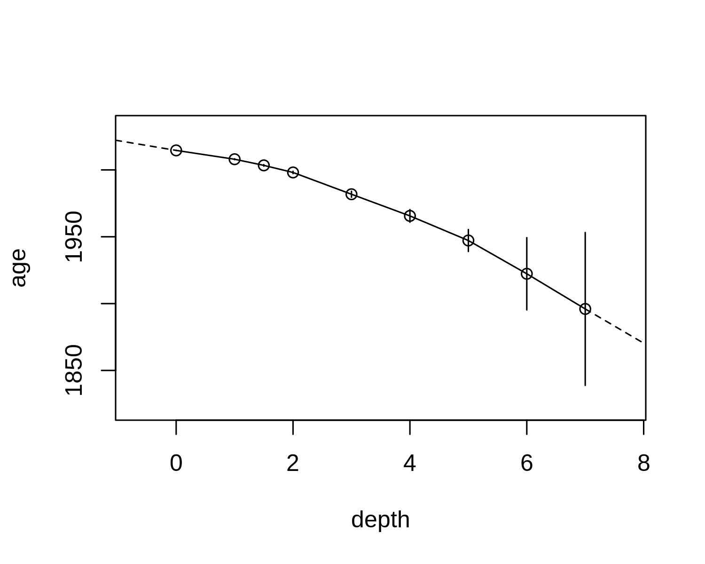

vignettes/age_depth.Rmd
age_depth.RmdGiven a known depths and known (or modelled) ages, it is often convenient to approximate age as a continuous function of depth in an archive. This package provides tools to flexibly create age-depth relationships with various rules for interpolating age within known age-depth values, and extrapolating above and below these values. Typically, this is interpolation between known values and extrapolating using average sedimentation rates based on ages known at discrete points in a core.
Using the built-in dataset alta_lake_210Pb_ages, which contains a Lead-210 (CRS) age-depth relationship for a core from Alta Lake, Whistler, British Columbia, we can create an age-depth model (note that age and depth are evaluated within .data, if it is provided, and support tidy evaluation):
library(tidypaleo)
#>
#> Attaching package: 'tidypaleo'
#> The following object is masked from 'package:stats':
#>
#> filter
alta_lake_adm <- age_depth_model(
alta_lake_210Pb_ages,
depth = depth_cm, age = age_year_ad,
age_max = age_year_ad + age_error_yr,
age_min = age_year_ad - age_error_yr
)
alta_lake_adm
#> <age_depth_model>
#> Call:
#> age_depth_model(
#> .data = alta_lake_210Pb_ages, depth = depth_cm,
#> age = age_year_ad, age_min = age_year_ad - age_error_yr,
#> age_max = age_year_ad + age_error_yr
#> )Then, we can plot the relationship:
…Or predict raw data:
predict(alta_lake_adm, depth = seq(-1, 10, 0.5))
#> # A tibble: 23 x 5
#> depth age age_min age_max method
#> <dbl> <dbl> <dbl> <dbl> <chr>
#> 1 -1 2032. NA NA extrapolate_above
#> 2 -0.5 2023. NA NA extrapolate_above
#> 3 0 2015. 2015. 2015. interpolate
#> 4 0.5 2011. NA NA interpolate
#> 5 1 2008 2008. 2008. interpolate
#> 6 1.5 2003. 2003. 2004. interpolate
#> 7 2 1998. 1997. 1999. interpolate
#> 8 2.5 1990. NA NA interpolate
#> 9 3 1982. 1980. 1984. interpolate
#> 10 3.5 1974. NA NA interpolate
#> # … with 13 more rowsThe default behaviour is to interpolate within known ages/depths, and extrapolate using a linear fit of ages/depths. These can be specified using transform functions, which take XY data and produce forward and inverse predictions based on them. The default call is:
age_depth_model(
...,
interpolate_age = age_depth_interpolate,
extrapolate_age_below = ~age_depth_extrapolate(.x, .y, x0 = last, y0 = last),
extrapolate_age_above = ~age_depth_extrapolate(.x, .y, x0 = first, y0 = first),
interpolate_age_limits = trans_exact,
extrapolate_age_limits_below = trans_na,
extrapolate_age_limits_above = trans_na
)To customize the behaviour of the predictions (e.g., disable extrapolating above or below), specify a transform function in the appropriate category. One-sided formulas are turned into functions using the rlang::as_function(). A more advanced way might be to only use the first/last few observations to extrapolate above and below, which one could do like this:
alta_lake_adm2 <- age_depth_model(
alta_lake_210Pb_ages,
depth = depth_cm, age = age_year_ad,
age_max = age_year_ad + age_error_yr,
age_min = age_year_ad - age_error_yr,
extrapolate_age_below = ~age_depth_extrapolate(
tail(.x, 3), tail(.y, 3), x0 = dplyr::last, y0 = dplyr::last
),
extrapolate_age_above = ~age_depth_extrapolate(
head(.x, 3), head(.y, 3), x0 = dplyr::first, y0 = dplyr::first
)
)
plot(alta_lake_adm2)